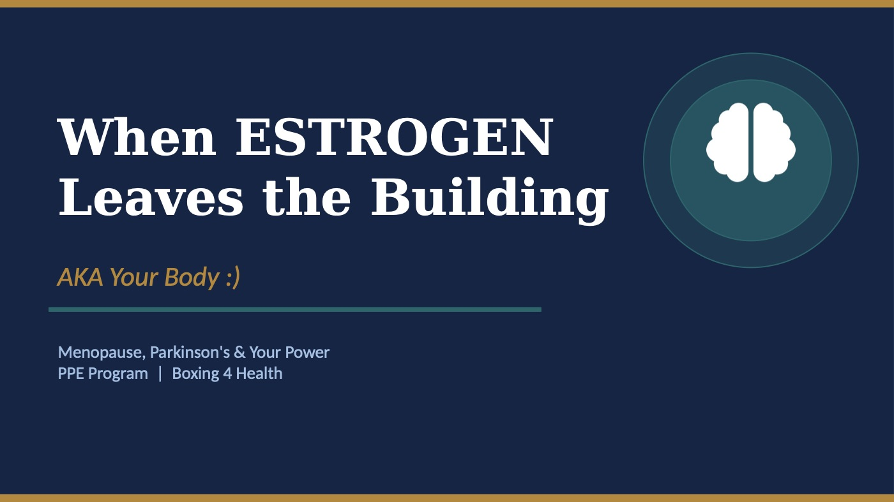
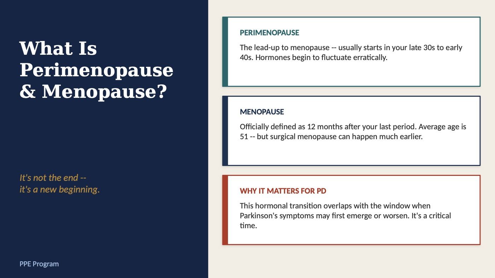
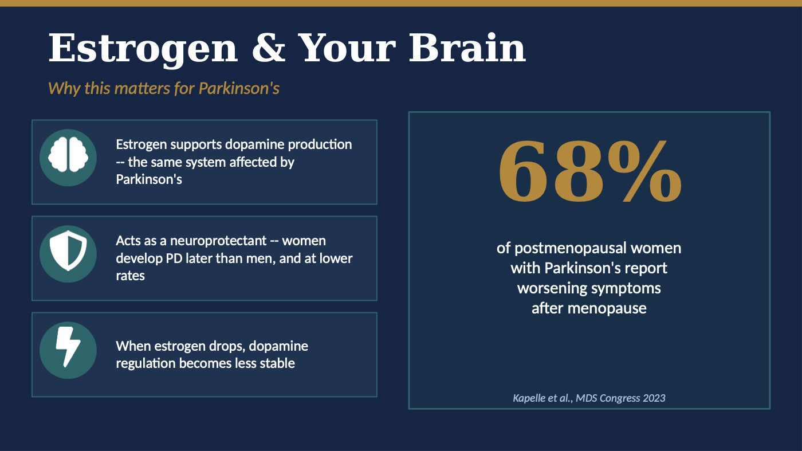
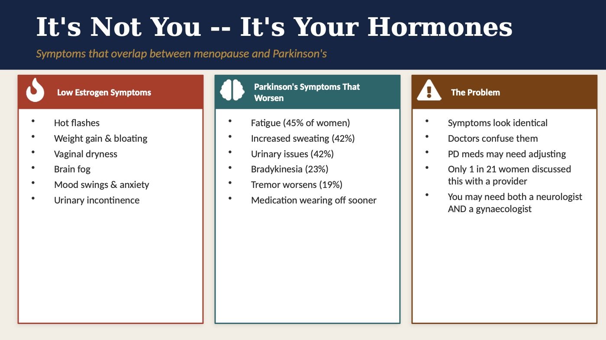
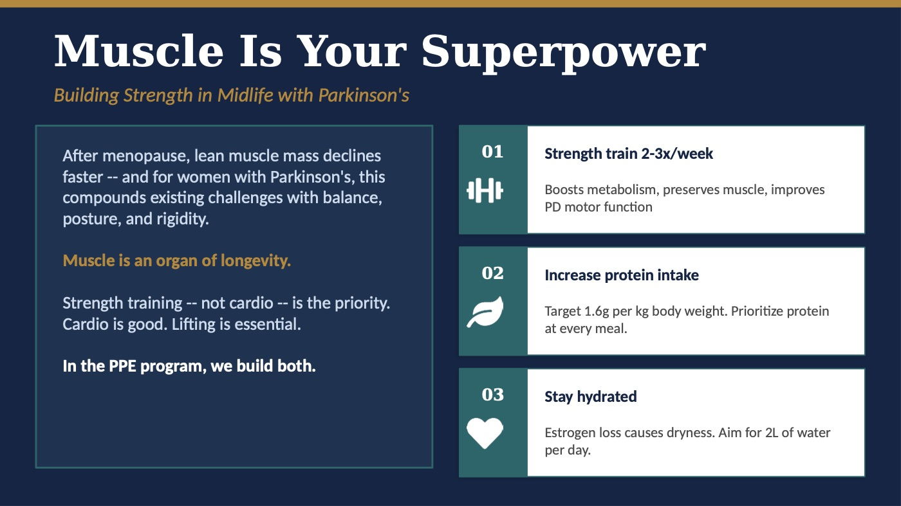
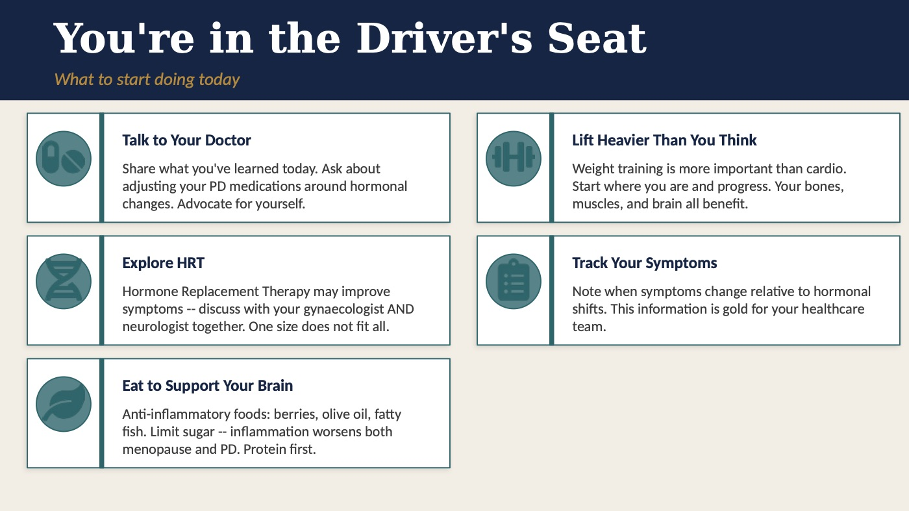
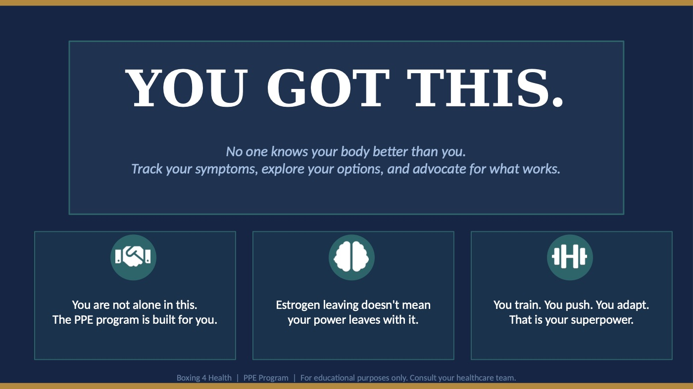

Perimenopause
The lead-up to menopause. It usually starts in your late 30s to early 40s. Hormones begin to go up and down in an unpredictable way.
Home · Bonus · Women’s Health: Menopause & Parkinson’sBonus · Santé des femmes : ménopause et Parkinson
Bonus · Women’s Health: Menopause & Parkinson’sBonus · Santé des femmes : ménopause et ParkinsonWhen estrogen leaves the building (a.k.a. your body), your power doesn’t leave with it. This lesson explains what menopause can mean for Parkinson’s — and what you can start doing today.
Christine’s presentation, slide by slide. Use the arrows, swipe, or tap a thumbnail — and download the PDF to keep or print.







It’s not the end — it’s a new beginning.
The lead-up to menopause. It usually starts in your late 30s to early 40s. Hormones begin to go up and down in an unpredictable way.
Officially, menopause is 12 months after your last period. The average age is 51 — but surgical menopause can happen much earlier.
This hormone change overlaps with the window when Parkinson’s symptoms may first show up or get worse. It’s a critical time.
Here’s why this matters for Parkinson’s:
Many symptoms of menopause and Parkinson’s overlap.
Building strength in midlife with Parkinson’s matters. After menopause, lean muscle mass declines faster. For women with Parkinson’s, this adds to existing challenges with balance, posture and rigidity (stiffness).
Muscle is an organ of longevity. Strength training — not cardio — is the priority. Cardio is good. Lifting is essential. In the PPE program, we build both.
It boosts metabolism, keeps your muscle and improves Parkinson’s motor function (movement).
Target 1.6 g of protein per kg of body weight. Make protein a priority at every meal.
Losing estrogen causes dryness. Aim for 2 litres of water a day.
What to start doing today:
Share what you’ve learned today. Ask about adjusting your Parkinson’s medications around hormone changes. Advocate for yourself.
Weight training is more important than cardio. Start where you are and progress. Your bones, muscles and brain all benefit.
Hormone replacement therapy (HRT) may improve symptoms — discuss it with your gynaecologist and neurologist together. One size does not fit all.
Note when symptoms change compared with hormone shifts. This information is gold for your health care team.
Choose anti-inflammatory foods: berries, olive oil, fatty fish. Limit sugar — inflammation makes both menopause and Parkinson’s worse. Protein first.
You got this
No one knows your body better than you. Track your symptoms, explore your options and advocate for what works. You are not alone in this — the PPE program is built for you.
Estrogen leaving doesn’t mean your power leaves with it. You train. You push. You adapt. That is your superpower.
Talk to your care team
This lesson is for education only and isn’t medical advice. Check with your doctor, neurologist or pharmacist before starting a supplement or making a big change to your diet or medication.
Quand l’œstrogène quitte le bâtiment (autrement dit, votre corps), votre force, elle, ne s’en va pas. Cette leçon explique ce que la ménopause peut signifier pour la maladie de Parkinson — et ce que vous pouvez commencer à faire dès aujourd’hui.
La présentation de Christine (en anglais), diapositive par diapositive. Utilisez les flèches, glissez du doigt ou touchez une vignette — et téléchargez le PDF pour le garder ou l’imprimer.
Ce n’est pas la fin — c’est un nouveau départ.
La période qui précède la ménopause. Elle commence habituellement vers la fin de la trentaine ou au début de la quarantaine. Les hormones se mettent à fluctuer de façon imprévisible.
Officiellement, la ménopause survient 12 mois après les dernières règles. L’âge moyen est de 51 ans — mais une ménopause chirurgicale peut arriver beaucoup plus tôt.
Ce changement hormonal coïncide avec la période où les symptômes du Parkinson peuvent apparaître ou s’aggraver. C’est un moment crucial.
Voici pourquoi c’est important pour la maladie de Parkinson :
Plusieurs symptômes de la ménopause et du Parkinson se chevauchent.
Bâtir sa force au mitan de la vie avec le Parkinson, c’est important. Après la ménopause, la masse musculaire maigre diminue plus vite. Pour les femmes atteintes de Parkinson, cela s’ajoute aux défis déjà présents d’équilibre, de posture et de rigidité (raideur).
Le muscle est un organe de longévité. L’entraînement en force — pas le cardio — est la priorité. Le cardio, c’est bien. Soulever des poids, c’est essentiel. Dans le programme PPE, on travaille les deux.
Cela stimule le métabolisme, préserve vos muscles et améliore la fonction motrice (le mouvement) dans le Parkinson.
Visez 1,6 g de protéines par kg de poids corporel. Donnez la priorité aux protéines à chaque repas.
La perte d’œstrogène cause de la sécheresse. Visez 2 litres d’eau par jour.
Ce que vous pouvez commencer à faire aujourd’hui :
Partagez ce que vous avez appris aujourd’hui. Demandez s’il faut ajuster vos médicaments pour le Parkinson en fonction des changements hormonaux. Défendez vos intérêts.
La musculation est plus importante que le cardio. Commencez là où vous êtes et progressez. Vos os, vos muscles et votre cerveau en profitent tous.
L’hormonothérapie de remplacement (HTR) peut améliorer les symptômes — parlez-en avec votre gynécologue et votre neurologue ensemble. Il n’y a pas de solution universelle.
Notez quand vos symptômes changent par rapport aux variations hormonales. Ces informations valent de l’or pour votre équipe de soins.
Choisissez des aliments anti-inflammatoires : petits fruits, huile d’olive, poissons gras. Limitez le sucre — l’inflammation aggrave autant la ménopause que le Parkinson. Les protéines d’abord.
Vous êtes capable
Personne ne connaît votre corps mieux que vous. Suivez vos symptômes, explorez vos options et défendez ce qui fonctionne pour vous. Vous n’êtes pas seule — le programme PPE est conçu pour vous.
Le départ de l’œstrogène ne veut pas dire que votre force part avec lui. Vous vous entraînez. Vous persévérez. Vous vous adaptez. C’est ça, votre superpouvoir.
Parlez-en à votre équipe de soins
Cette leçon est offerte à titre éducatif seulement et ne remplace pas un avis médical. Consultez votre médecin, votre neurologue ou votre pharmacien avant de commencer un supplément ou de modifier de façon importante votre alimentation ou votre médication.